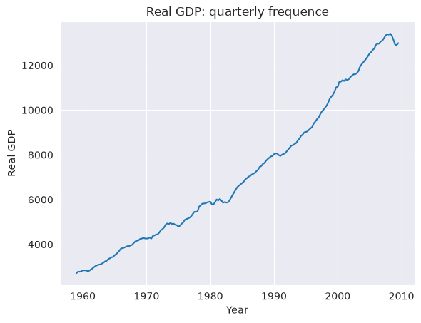
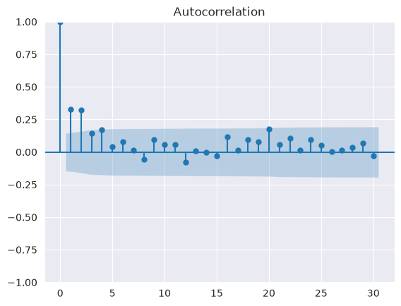
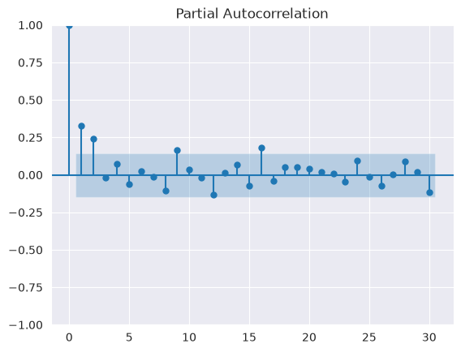
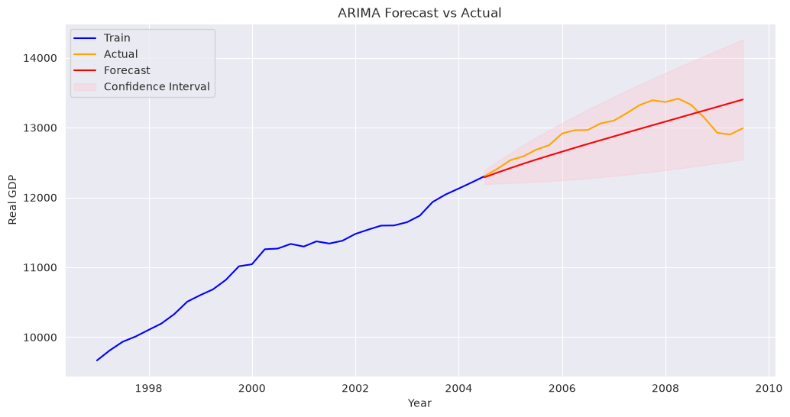

Autoregressive Integrated Moving Average (ARIMA) Tutorial#
This notebook demonstrates a practical implementation of ARIMA using real-world macroeconomic data.
The AutoRegressive Integrated Moving Average (ARIMA) model is one of the most widely used approaches in time-series forecasting. In a nutshell, ARIMA forecasts a time-series’ future values based on past values and past forecast errors. As shown by its name, ARIMA consists of three main components:
AR (AutoRegressive): the model uses past values to predict the current value
I (Integrated): the series is differenced \(d\) times to achieve stationarity
MA: it represents the moving average components (past errors), indicating that the forecast error is a linear combination of past respective errors. In mathematical terms, the ARIMA(p,d,q) model can be written as:
where:
\(y_t\): value of the time series at time \(t\)
\(\Delta^d\): differencing operator applied \(d\) times
\(\phi_i\): autoregressive coefficients
\(\theta_j\): moving average coefficients
\(\epsilon_t\): error term
As the equation highlights, there are three parameters defining ARIMA:
Autoregressive order (p): amount of past data point used to predict the future value
(Nonseasonal) differencing order (d): Differencing order of the target. Stationarity tests help understanding whether a first or a second differencing is needed.
Order of the moving average (q): number of lagged errors in the prediction equations, i.e the moving average window used to forecast future values
[1]:
import matplotlib.pyplot as plt
import numpy as np
import pandas as pd
import seaborn as sns
from statsmodels.datasets import macrodata
# ACF and PACF
from statsmodels.graphics.tsaplots import plot_acf, plot_pacf
# ARIMA
from statsmodels.tsa.arima.model import ARIMA
# ADF test
from statsmodels.tsa.stattools import adfuller
sns.set_style("darkgrid")
Loading the data#
This tutorial consider the statsmodels macrodata dataset. It collects various macro data recorded quarterly from 1959 to 2009.
In details, we consider real GDP (“realGDP”), as it is easy to interpret and it is a well-known macrodata.
To begin with, we load the data, assign a year+quarter index and perform a short Exploratory Data Analysis (EDA).
[2]:
# load the dataset
data = macrodata.load_pandas().data
# select the realgdp ts
ts = data[["year", "quarter", "realgdp"]]
# build a quarterly period index
ts.index = pd.PeriodIndex(
ts["year"].astype(int).astype(str) + "Q" + ts["quarter"].astype(int).astype(str),
freq="Q",
)
ts.index.name = "quarter"
# drop old columns if needed
ts = ts.drop(columns=["year", "quarter"])
[3]:
# show first 2 rows
ts.head(2)
[3]:
| realgdp | |
|---|---|
| quarter | |
| 1959Q1 | 2710.349 |
| 1959Q2 | 2778.801 |
[4]:
# show last 2 rows
ts.tail(2)
[4]:
| realgdp | |
|---|---|
| quarter | |
| 2009Q2 | 12901.504 |
| 2009Q3 | 12990.341 |
[5]:
# ts summary statistics
print("Real GDP summary statistics:")
ts.describe().map("{:.2f}".format) # show it w/ 2 decimals
Real GDP summary statistics:
[5]:
| realgdp | |
|---|---|
| count | 203.00 |
| mean | 7221.17 |
| std | 3214.96 |
| min | 2710.35 |
| 25% | 4440.10 |
| 50% | 6559.59 |
| 75% | 9629.35 |
| max | 13415.27 |
The time-series has 203 observation, a median of 6559.59 and an average of 7221.17. Since the median and the average are close, probably there are not outliers in the series.
The standard deviation is 3214.9.
[6]:
# set the index as timestamp for plotting
ts_plot = ts.to_timestamp()
# plot ts
plt.plot(ts_plot)
plt.title("Real GDP: quarterly frequence")
plt.xlabel("Year")
plt.ylabel("Real GDP")
plt.show()

The data is plotted as a time series with years (quarterly frequence) on the x-axis and real GDP on the y-axis.
As the chart highlights, there is no clear seasonal pattern and an evident upward trend in real GDP. This suggests the time series is not-stationary, and it needs differencing (of at least order = 1) to become stationary. That is, d is likely to be >= 1.
Train-testing splitting#
In order to assess ARIMA performances and avoid overfitting, we divide data into training and testing sets. In this specific case, 90% of data is used for training. This leaves out around 5 years for validation purposes.
As real GDP has time-dependencies, it is crucial to keep data’s temporal alignment (i.e chronological order) when splitting between train and test set.
[7]:
# define the training %
split_index = int(len(ts) * 0.90)
# training set
train = ts.iloc[:split_index]
# validation set
val = ts.iloc[split_index:]
Parameter Definition#
ARIMA requires specifying (p,d,q).
Augmented Dickey-Fuller (ADF) test, autocorrelation (ACF) and partial autocorrelation (PACF) plots help in determining them. However, the most efficient approach is to set up the simplest ARIMA configuration and eventually adding complexity by trial-and-errors.
Let’s begin with d. We will difference our time series until it becomes stationary. To test for it, we will employ an Augmented Dickey-Fuller test.
[8]:
# Apply first differencing
ts_diff = train.diff().dropna()
# ADF test
adf_test = adfuller(ts_diff, result_object=True)
# show p-values
print(f"ADF p-value: {adf_test.pvalue:.6f}")
ADF p-value: 0.000000
The series becomes stationary by differencing by 1, as the ADF test and the plot remark. Therefore d = 1.
Turning to p and q, We now consider the auto-correlation and partial auto-correlation plots to assess p and q maximum values. ACF helps in identifying MA(q), while PACF helps in defining AR(p).
[9]:
# plot ACF
plt.show(plot_acf(ts_diff, lags=30))

[10]:
# plot PACF
plt.show(plot_pacf(ts_diff, lags=30))

Both ACF and PACF show significant spikes at the first few lags, suggesting the presence of a short-term correlation. Altogether, the plots highlighting a time-series with an initial correlation that lose importance after the very first few lags.
The maximum AR() order will be defined by the PACF last significant order. On the other hand, the maximum MA() order is determined by ACF last-significant lag.
To keep this tutorial straightforward, we will set up the simplest option: an ARIMA(1,1,1) configuration. In practice, model selection is often refined using information criteria such as AIC or BIC.
Model implementation#
Once p, d and q are defined, it is time to implement the model.
Firstly, we initialize an ARIMA model through the ARIMA() function and specify p, d and q (order) and trend. Adding drift (trend = “t”) allows the model to capture long-term growth.
[11]:
# define the model
arima = ARIMA(train, order=(1, 1, 1), trend="t")
Secondly, the model is trained on the train dataset. This is done through the fit() function.
[12]:
# fit the ARIMA model
arima_fit = arima.fit()
# show model summary
print(arima_fit.summary())
SARIMAX Results
==============================================================================
Dep. Variable: realgdp No. Observations: 182
Model: ARIMA(1, 1, 1) Log Likelihood -964.154
Date: Sat, 22 Aug 2026 AIC 1936.308
Time: 11:20:05 BIC 1949.102
Sample: 03-31-1959 HQIC 1941.495
- 06-30-2004
Covariance Type: opg
==============================================================================
coef std err z P>|z| [0.025 0.975]
------------------------------------------------------------------------------
x1 52.5377 7.754 6.776 0.000 37.341 67.735
ar.L1 0.7489 0.102 7.339 0.000 0.549 0.949
ma.L1 -0.4723 0.138 -3.426 0.001 -0.742 -0.202
sigma2 2475.9130 213.673 11.587 0.000 2057.121 2894.705
===================================================================================
Ljung-Box (L1) (Q): 0.18 Jarque-Bera (JB): 9.61
Prob(Q): 0.67 Prob(JB): 0.01
Heteroskedasticity (H): 1.99 Skew: 0.09
Prob(H) (two-sided): 0.01 Kurtosis: 4.11
===================================================================================
Warnings:
[1] Covariance matrix calculated using the outer product of gradients (complex-step).
The table summarizes ARIMA estimation.
At the top-left, we can see description of both the variable and the model. On the top-right, instead, are displayed metrics to assess performances and used for comparison.
In the middle, the table shows variables’ coefficent, along with their standard error, z-statistic, p-values and 95% confidence interval. In this specific case, x1 is the constant term (drift), ar.L1 is the autoregressive term and sigma2 is the variance of residuals (i.e error)-
At the bottom, several residuals diagnostics tests are presented. These are crucial to evaluate properties as errors autocorrelation, normality and homoskedasticity, allowing to evaluate the overall model’s reliability.
Forecasting#
Thirdly, future values are forecasted. This is done thanks to the get_forecast() function. Here, we will predict future GDP values along with its 95% confidence interval.
[13]:
# predict real GDP values (avg + confidence interval)
predictions = arima_fit.get_forecast(steps=len(val))
# get point prediction
predictions_mean = predictions.predicted_mean
# build the confidence interval
conf_int = predictions.conf_int()
# show prediction
print("Real GDP predictions:")
print("-------------------------------------")
print(predictions_mean)
Real GDP predictions:
-------------------------------------
2004Q3 12287.849232
2004Q4 12356.483090
2005Q1 12421.074946
2005Q2 12482.639813
2005Q3 12541.937817
2005Q4 12599.538207
2006Q1 12655.867280
2006Q2 12711.244287
2006Q3 12765.908305
2006Q4 12820.038379
2007Q1 12873.768591
2007Q2 12927.199353
2007Q3 12980.405862
2007Q4 13033.444431
2008Q1 13086.357233
2008Q2 13139.175849
2008Q3 13191.923933
2008Q4 13244.619195
2009Q1 13297.274900
2009Q2 13349.900981
2009Q3 13402.504878
Freq: Q-DEC, Name: predicted_mean, dtype: float64
Model Evaluation#
Finally, it is time to assess model performances by comparing prediction with actual values (the test set) considering both RMSE and predicted-vs-actual plot.
[14]:
# trasform validation into a series
val_series = val.squeeze()
# compute rmse
rmse = np.sqrt(np.mean((val_series - predictions_mean.values) ** 2))
# Note: Ensure predictions and actual values are aligned before computing errors
# show it
print("Validation RMSE:")
print("----------------")
print(f"{rmse: .3f}")
Validation RMSE:
----------------
254.661
The RMSE corresponds to roughly 3.5% of the average GDP level, underscoring that the model captures the general trend reasonably well.
[15]:
# Convert train to timestamp
train_plot = train.to_timestamp()
# Convert val to timestamp
val_plot = val.to_timestamp()
# Align the prediction series w/ validation
predictions_mean.index = val_plot.index
# Align the CI w/ validation
conf_int.index = val_plot.index
# keep only last 30 points
train_tail = train_plot[-30:]
# Bridge first validation points to make plot continuous
bridge_point = val_plot.iloc[:1]
train_tail = pd.concat([train_tail, bridge_point])
# plot
plt.figure(figsize=(12, 6))
# last 30 train points
plt.plot(train_tail, label="Train", color="blue")
# actual validation points
plt.plot(val_plot, label="Actual", color="orange")
# forecast
plt.plot(predictions_mean, label="Forecast", color="red")
# confidence interval
plt.fill_between(
conf_int.index,
conf_int.iloc[:, 0],
conf_int.iloc[:, 1],
color="pink",
alpha=0.3,
label="Confidence Interval",
)
# labels & title
plt.title("ARIMA Forecast vs Actual")
plt.xlabel("Year")
plt.ylabel("Real GDP")
plt.legend()
plt.show()

As the RMSE and the actual-vs-predicted plot reveal, the model captures the real-GDP upward trend reasonably well. However, it fails in catching some short-term fluctuations along with some temporal dynamics.
This is expected, as ARIMA(1,1,1) is a simple model and does not capture all GDP dynamics.
Note: ARIMA assumes linear relationships and may struggle with structural breaks or non-linear dynamics. More advanced models (e.g., SARIMA, VAR, or ML-based models) may be more appropriate in such cases.
Common Pitfalls#
Below a list of common pitfalls when implementing an ARIMA model:
Forget to test for stationarity before fitting. Data stationarity and integration order defines d, and if data are not stationary ARIMA will produce misleading results.
Using random train-test split instead of time-based splits. Time based splits ensure data time dependency, splitting randomly completely break the chronological order.
Misinterpreting predict(), forecast() and get_forecast(): Forecast() is specialized for future out-of-sample points; predict() works both for in-sample and out-of-sample data and needs a data range; get_forecast() provides the richest output with and confidence intervals
Overfitting with overly complex p and q. Always assess model performances on a set-aside validation test.